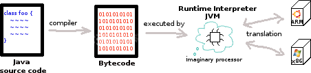
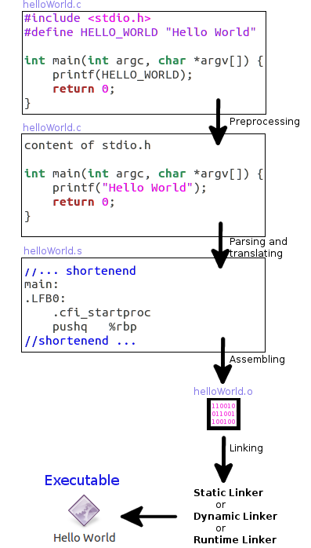

Compiling of Android/Java vs. C
Growing up with Java and Eclipse I never wondered myself about compilation processes. The only thing I did, was pressing the launch-button in Eclipse and be delighted by the result of my program. So this article is about how machines comes to the joy of understanding our source code. It covers Java, Android and C.Java1
Java source code is compiled into Bytecode. The Bytecode gets executed by a Runtime Interpreter in a Java Virtual Machine (JVM). A JVM is build upon an imaginary processor, which communicates and translates between the Bytecode, the operation system (os) and it's hardware, on which it should run.
This has the advantage, that the compilation process of source code is independent of the underlying os and hardware. But it is slower than running machine code directly, because the work of the hardware (e.g. to decode and execute instructions) has to be repeated in the JVM.To ease this issue, the JVM has a Just In Time compiler (JIT). When some Bytecode is executed again and again (a so called hotspot), the JIT can compile Bytecode to machine code for the underlying os and its hardware during runtime.

Android2
The basics of Android Apps will not be discussed here. Please use the offical developer guide for that.Basically Android Apps (apk) are based on Java. But Android has a Davlik Virtual Machine instead of a JVM. Funnily Java source code is translated into Java Bytecode first and then the Java Bytecode is translated into Dalvik Bytecode. But packing an apk is more than compiling Java source code. Below is a picture, which gives an overview. Details are here.

Android uses Gradle as build toolkit for packing the apk. Gradle can be compared to the GNU Build System. Dependencies of the project and custom build logic can be managed by it. Its four main tasks are:
- assemble: Builds project output
- check: Runs all kind of tests
- run: Runs assemble and check
- clean: Cleans
For running correctly the build system assumes sensible defaults for the project structure and other build options, which can be customized. The build system is configured in a build.gradle file. Please refer to Android Plugin for Gradle for more information.
C3
C does not have the concept of a virtual machine. First a preprocessor runs over the source code. It is basically a substitution engine,
which copies include-directives and replaces macros in the source code. Second the source code is parsed and translated into Assembler.
This step is platform-dependent, because Assembler code is different for different platforms. Third the Assembler code is translated into machine code.
Finally a linker puts everything together to one program. There are three different types of linker.
|
 |
Conclusion
Because Java and Android programs are executed in a virtual machine, they can be compiled easily on any device and than shifted to any arbitrary device on which the required virtual machine is installed.In opposite the compilation process of C is platform-dependent. Due to that a program has to be compiled for a concrete platform! Normally it is compiled on the target device, because a Make Build System can figure out automatically the required information of the system, which are needed for compiling.
Noting that Apps aren't compiled on the target platform, integrating C into an App is not as easy as someone may think in the first place. The Java part is compiled easily against a well known virtual machine. But for compiling the C part, specific target platform information has to be provided.